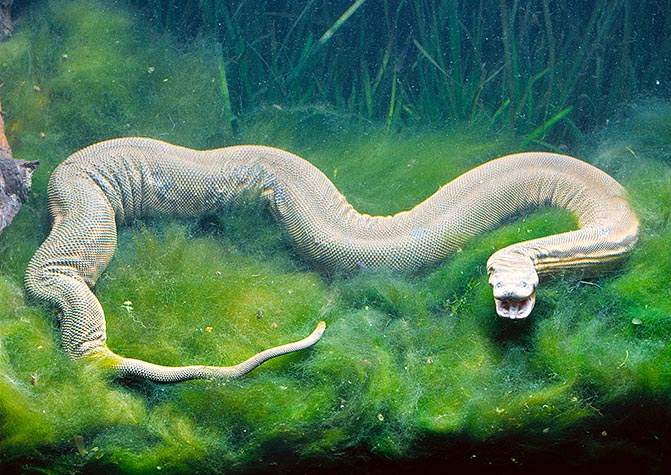

Es una serpiente de agua con cuerpo grueso y una cabeza mucho más pequeña que el cuerpo. Se encuentra en lagunas y ríos del sudeste asiático, es totalmente acuática y le gusta estar en el fondo durante mucho tiempo y por las noches suele tener hábitos cazadores en busca de alimento Es una serpiente de agua con cuerpo grueso y una cabeza mucho más pequeña que el cuerpo. Se encuentra en lagunas y ríos del sudeste asiático, es totalmente acuática y le gusta estar en el fondo durante mucho tiempo y por las noches suele tener hábitos cazadores en busca de alimento Es una serpiente de agua con cuerpo grueso y una cabeza mucho más pequeña que el cuerpo. Se encuentra en lagunas y ríos del sudeste asiático, es totalmente acuática y le gusta estar en el fondo durante mucho tiempo y por las noches suele tener hábitos cazadores en busca de alimento Es una serpiente de agua con cuerpo grueso y una cabeza mucho más pequeña que el cuerpo. Se encuentra en lagunas y ríos del sudeste asiático, es totalmente acuática y le gusta estar en el fondo durante mucho tiempo y por las noches suele tener hábitos cazadores en busca de alimento.
